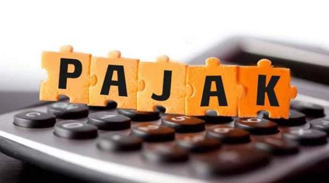

© Anisa Nurmaulidya | Pacar Jaemin

Pajak Pusat vs Pajak Daerah: Apa Bedanya?
Bentar-bentar, Kawan Pajak udah tau belum nih, apa sih pajak itu?
{kind=link}
Berdasarkan Undang-Undang Nomor 28 Tahun 2007 Pasal 1 Angka 1 tentang Perubahan Ketiga atas Undang-Undang Nomor 6 Tahun 1983 tentang Ketentuan Umum dan Tata Cara Perpajakan, Pajak adalah kontribusi wajib kepada negara yang terutang oleh orang pribadi atau badan yang bersifat memaksa berdasarkan Undang-Undang dengan tidak mendapatkan imbalan secara langsung dan digunakan untuk keperluan negara bagi sebesar-besarnya kemakmuran rakyat. (“Berbagai Definisi Pajak, Simak Di Sini,” 2020)
Menilik pada laporan APBN (Anggaran Pendapatan Belanja Negara), pajak selalu menjadi penyumbang terbesar bagi anggaran negara. Bahkan di tahun 2022, penerimaan pajak berada pada titik paling tinggi jika dibandingkan dengan empat tahun sebelumnya, yakni sebesar Rp1.716,76 triliun. (Kementerian Keuangan Republik Indonesia, 2022). Keren banget, ya, Kawan Pajak?
Selanjutnya, menurut Mardiasmo pada bukunya yang berjudul Perpajakan, Pajak sendiri dapat dikategorikan dengan berbagai kriteria, misalnya berdasarkan:
1. golongan;
2. sifat;
3. lembaga pemungut;
4. tata cara pemungutan;
5. asas pemungutan;
6. dan sistem pemungutan.
Ada banyak sekali ya, Kawan Pajak? Nah untuk saat ini, kita akan fokus pada poin ketiga!
Lembaga pemungut pajak merupakan badan dan/atau instansi pemerintah yang diberikan wewenang untuk memungut dan menghimpun pajak yang nantinya akan disetor ke kas negara. Jika melihat kategori pajak berdasarkan lembaga pemungutnya, pajak dapat dikategorikan menjadi dua, yakni:
1. pajak pusat, dan;
2. pajak daerah.
Apa bedanya ya kedua golongan pajak itu?
Pajak pusat, sesuai dengan namanya, dipungut oleh pemerintah pusat dan sebagian besar dananya akan masuk ke APBN (Anggaran Pendapatan Belanja Negara). Pemungut pajak pusat adalah Direktorat Jenderal Pajak yang dibantu oleh Kantor Pelayanan Pajak di tiap daerah untuk administrasi perpajakkan. (Mardiasmo, 2002, 6). Ada banyak sekali contoh pajak pusat, di antaranya:
1. PPh (Pajak Penghasilan);
2. PPN (Pajak Pertambahan Nilai);
3. PPnBM (Pajak Penjualan atas Barang Mewah);
4. PBB (Pajak Bumi dan Bangunan);
5. Bea materai dipungut oleh Direktorat Bea Cukai.
Terus pajak daerah itu apa, dong?
Pajak daerah sendiri merupakan jenis pajak yang dipungut dan menjadi tanggung jawab pemerintah masing-masing daerah, yang mana pemungutnya adalah Badan Penerimaan Daerah dan pengadministrasian perpajakan dilakukan melalui Otoritas Pajak Daerah. Pajak ini akan masuk ke dana APBD (Anggaran Pendapatan Belanja Daerah) dan digunakan untuk membiayai rumah tangga daerah (Direktorat Jenderal Pajak, 2022).
Pajak daerah juga masih dapat dikategorikan menjadi dua jenis, loh! Ada pajak daerah provinsi dan pajak daerah kabupaten/kota. Adapun contoh jenis pajaknya:
1. Pajak daerah provinsi:
a. Pajak Kendaraan Bermotor;
b. Pajak Kendaraan di Atas Air;
c. Pajak Bahan Bakar Kendaraan Bermotor.
2. Pajak daerah kabupaten/kota:
a. Pajak Hotel;
b. Pajak Restoran;
c. Pajak Hiburan seperti tiket bioskop atau tiket film;
d. Pajak Reklame;
e. Pajak Penerangan Jalan.
Nah, dari pembahasan di atas semoga Kawan Pajak gak bingung lagi ya mengenai penggolongan serta perbedaan antara pajak pusat dan pajak daerah. Sampai bertemu di Ajak (Artikel Perpajakan) edisi selanjutnya!
References:
Berbagai Definisi Pajak, Simak di Sini. (2020, April 5). DDTC News. https://news.ddtc.co.id/berbagai-definisi-pajak-simak-di-sini-20043
Direktoral Jenderal Pajak. (2022, February 23). Pajak Pusat, Pajak Daerah: Lahh emang beda? YouTube. Retrieved May 10, 2023, from https://www.instagram.com/reel/CrxMHUxNt1u/?igshid=NTc4MTIwNjQ2YQ==
Kementerian Keuangan Republik Indonesia. (2022). APBN Kita Kinerja & Fakta: Kaleidoskop 2022. https://djpk.kemenkeu.go.id/?portfolio=apbn-kita-edisi-kaleidoskop-2022
Mardiasmo. (2002). Perpajakan (Edisi Revisi ed.). Penerbit Andi.